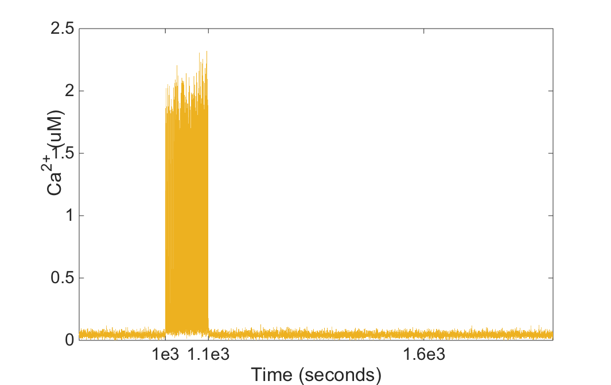

Updated model of cerebellar Long-Term Depression with CaMKII activation and its regulatory pathway associated with the paper:
Zamora Chimal CG, De Schutter E (2018) Ca2+ requirements for Long-Term Depression are frequency sensitive in Purkinje cells. Frontiers in Molecular Neuroscience
This archive was contributed to ModelDB and developed by Criseida Zamora.
criseida.chimal at oist.jp
September 2018 for STochastic Engine for Pathway Simulation (STEPS 3.3.0)
Usage instructions:
-------------------
Run camk_ltd.py with a command like
python camk_ltd.py
This script will generate .txt data files as Ca_mean.txt, active_CaMKII_mean.txt, AMPAR_mean.txt and PKC_mean.txt which could be plotted with another software tool.
The figures generated by this script show the mean of 100 iterations of the chemical species activity over time as follows.
| Calcium | CaMKII |
|  | |
| AMPAR | PKC |
| |